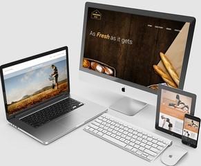
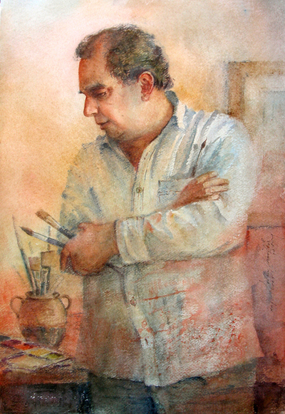
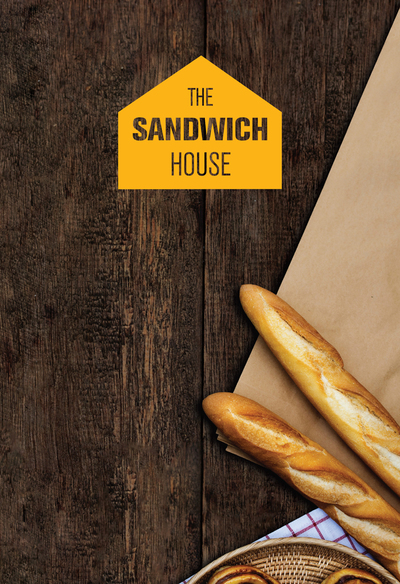

Who isStefan?
I am a Front-End Web Developer whose passion revolves around bringing designs to life through the use of for UI effects, animations and creating engaging, dynamic user experiences. All websites are responsive on all devices no matter what the size. I enjoy developing rich web experiences. When I get the chance, I enjoy travelling and exploring nature.
Interested? Get in touch and
let’s make some magic!
Priorities
Diverse
Each project is developed for the client’s individual needs, making sure it is user-friendly.
Fast
Speed is key when a website is loading on any device.
Responsive
All websites are responsive on all devices no matter what their size.
Dynamic
Use of animation makes the website experience more exciting and interactive.
Projects
John martin borg
This website illustrates a portfolio for the Maltese artist, John Martin Borg. It showcases a selection of the artist's beautiful works. After the theme was completed I integrated the website with WordPress CMS using 'PHP'. The design was handed to me in .pdf format which I then developed into fully functioning websites.
Visit WebsiteThe Sandwich House
This is a fictitious website called ‘The Sandwich House’. This website portrays an online business targeting customers interested in ordering a sandwich or sandwiches from the comfort of their home or office. The design of the website allows the user to put together the customer’s preferred choice of sandwich. Once the order is complete they will have it delivered to them.
Visit Website